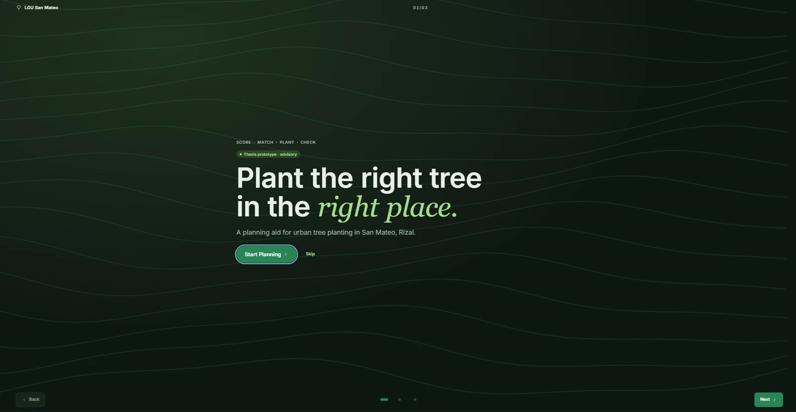
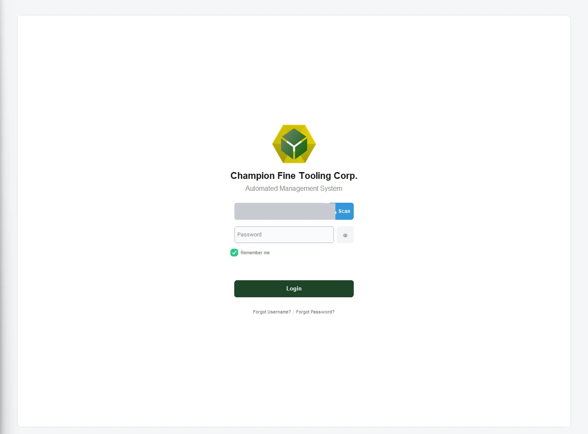
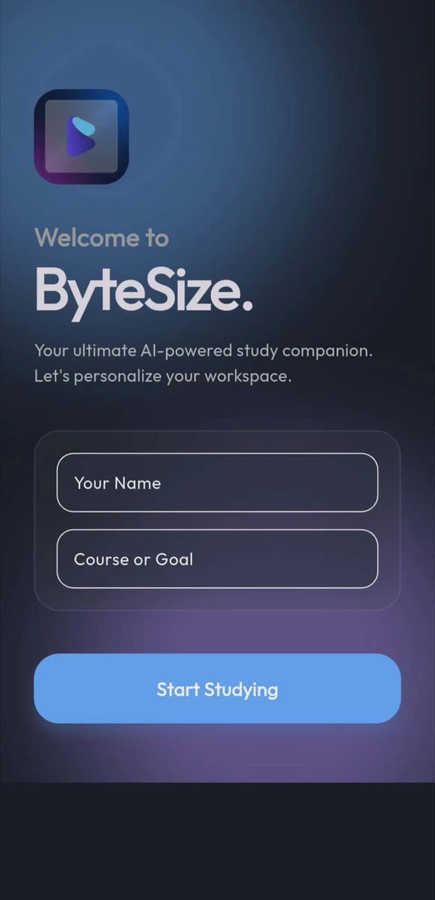
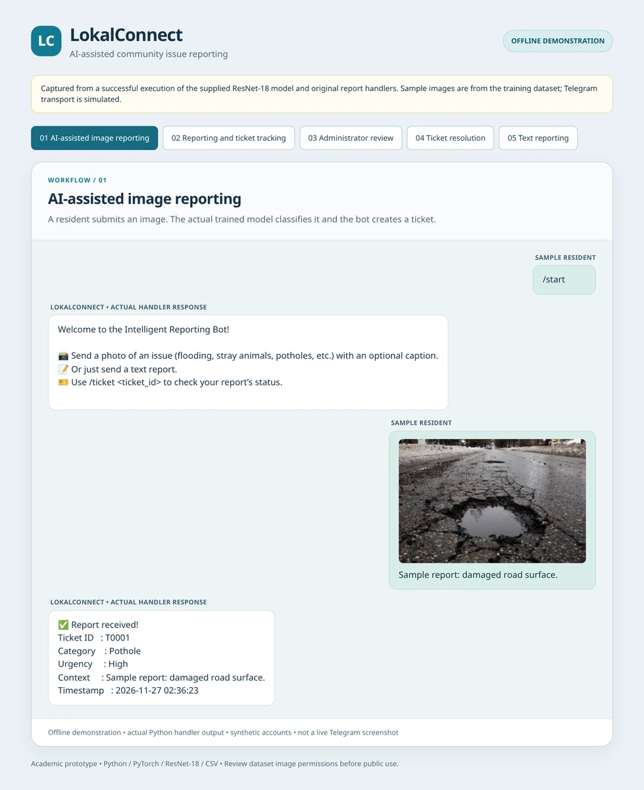
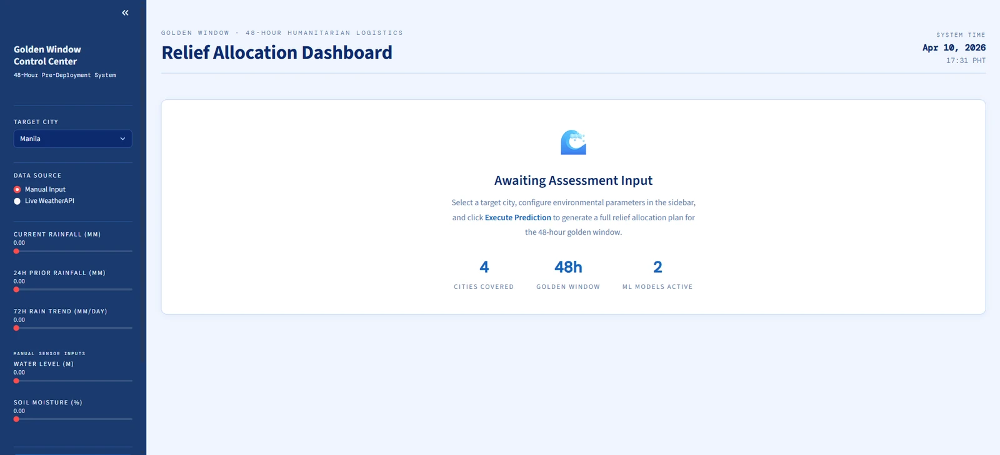
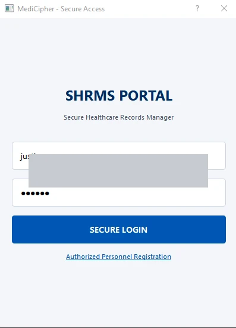
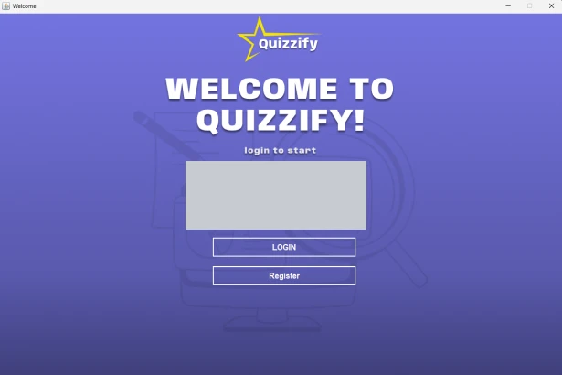
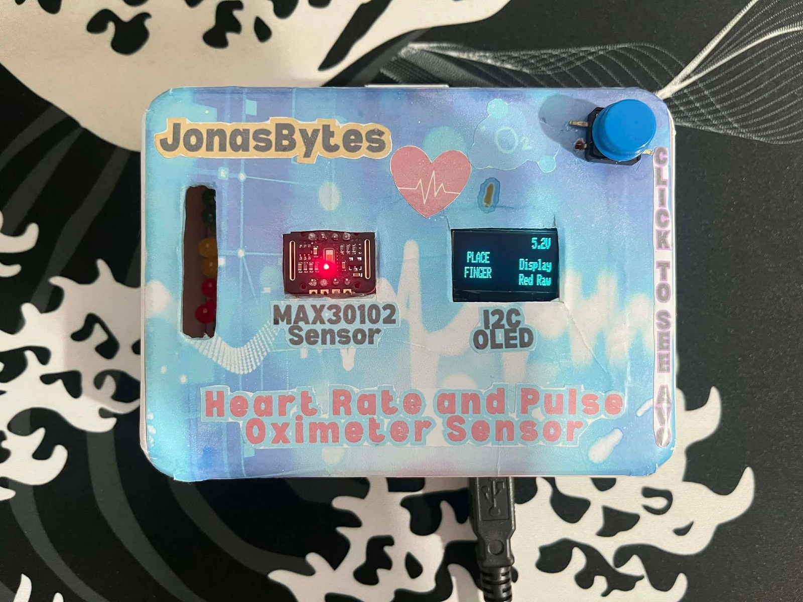
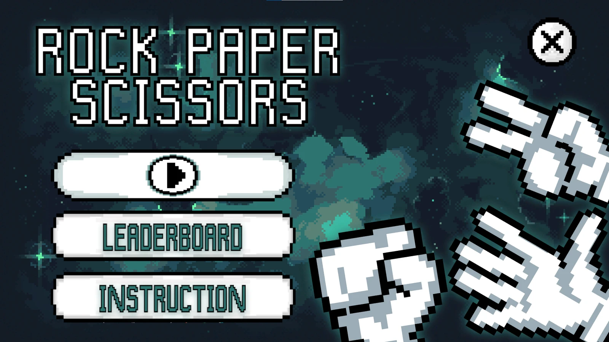

01 / 042017–2022 / Business operations
Learn how work gets done.
Customer interactions, sales, inventory and accountability.
Software · AI · Enterprise technology
Technical projects
SAP certifications
Dean's List semesters
Expected graduation

Original project view
Original project view
Original project view
Offline functional demo
Original project view
Original project view
Original project view
Original project view
Original project viewExploring better species–site decisions for community-led urban greening.
Making equipment and inventory easier to track and account for.
Turning study materials into summaries, questions and review cards.
A Telegram-based reporting workflow for community incidents.
Exploring flood-risk assessment and illustrative relief allocation.
An educational record-protection and authentication demonstration.
Role-based quiz creation, assessments and results.
An Arduino optical-sensing and display prototype.
A survival game with strategic buffs and ranked scores.
Customer interactions, sales, inventory and accountability.
Academic development projects, teamwork and research.
SAP professional certifications and continuous technical learning.
Seeking an internship where I can contribute to software, applied AI and enterprise technology.
I like understanding how systems work — and making them useful.
Exploring better species–site decisions for community-led urban greening.
Urban planting decisions require matching environmental conditions and species requirements.
The current dashboard visualizes spatial data and rule-based suitability; separate Random Forest and matching experiments explore allocation.
Thesis leader & lead developer. Led development of the Python/FastAPI backend and React GIS interface, coordinated environmental and species data preparation, and contributed to system analysis, design, code organization and thesis documentation.
8,255 dashboard working-point records; baseline integrity, map API tests and React build passed.
Research in progress. No field-survival validation; dashboard and experimental optimization paths are separate.
Research prototype for species–site suitability and community-led urban greening in San Mateo, Rizal. The documented landing and map interfaces illustrate the system; the experimental Random Forest and matching methods remain distinct from field-survival validation.
Explore the original project views.
Making equipment and inventory easier to track and account for.
Inventory and equipment issuance require reliable records and accountability.
A desktop system organizes inventory, QR tagging, issuance, maintenance and reporting.
Lead programmer & system analyst. Co-developed the inventory application, stock validation, duplicate detection, QR tracking, access control and report workflows; contributed to the user manual, system analysis, design and code organization.
Python compilation and authentication tests passed.
Full MySQL desktop integration not verified; confidential source and data require approval.
Documented original management-system screens. Editor panes, account details and selected operational information are masked. Public sharing requires company approval.
Explore the original project views.
Turning study materials into summaries, questions and review cards.
Students need a manageable way to review long notes.
The app imports study text and supports cloud-assisted summaries, source-oriented Q&A and local flashcard review.
Programmer in the HCI team. Contributed to Flutter development, Gemini integration, PDF and camera-text workflows, resolving package/UI/database issues, and project documentation.
Flutter tests and web build passed.
AI answers may be inaccurate; live AI and camera behavior not verified in the revised build.
Original mobile application screenshots from the April 2026 documentation. AI-generated study content requires review; the screenshots do not prove live API availability.
Explore the original project views.
A Telegram-based reporting workflow for community incidents.
Community incident reports need organized categorization and follow-up.
Image classification and ticket management support a reporting workflow.
Co-developed the concept proposal and its revisions, helped source datasets, and contributed to the documentation and presentation.
Saved ResNet-18 model loaded on CPU; photo and text reporting, ticket lookup, admin summary and closure tested offline using original handlers.
Live Telegram availability, independent classification accuracy and dataset redistribution permissions are not verified.
Offline execution of the original saved model and report handlers used training-set photos and synthetic accounts. Image classification, ticket creation, lookup and summary were exercised; notification was simulated. These are not live Telegram screenshots or independent accuracy evidence.
Explore the offline functional demonstration.
Exploring flood-risk assessment and illustrative relief allocation.
Planning relief requires interpreting weather and vulnerability information.
Historical modeling and a dashboard combine assessment inputs with illustrative resource estimates.
Contributed to the first and final research drafts, completed the second chapter, assisted revisions, and helped locate datasets and references.
Earlier model training tested; later weather integration unverified.
Not operational forecasting; resource estimates are illustrative.
The original project documents flood-risk assessment and illustrative 48-hour relief planning. Displayed results are historical prototype outputs, not operational forecasts or validated relief requirements.
Explore the original project views.
An educational record-protection and authentication demonstration.
Explore how records can be handled and protected in a desktop setting.
Demonstrates authentication, classical ciphers and an authenticated-encryption workflow with synthetic records.
Contributed features, helped revise the system, and worked on the initial and final documentation.
Repository revision includes security tests; full runtime unverified.
Educational prototype, not a clinical records system.
Original documented desktop screens predate the later AES-GCM redesign. Educational demonstration only, not a clinical system; avoid real patient data.
Explore the original project views.
Role-based quiz creation, assessments and results.
Quiz authors and learners need organized assessments and results.
A desktop system manages quizzes, users and attempt histories.
Designed the prototype, drafted and finalized the flowchart layout, organized the procedural flow, and assisted in documentation.
Java compilation and MySQL integration checks passed.
Full graphical workflows not manually verified.
Original academic quiz management screens. These illustrate the documented interface, not a claim of verified end-to-end execution of the revised build.
Explore the original project views.
An Arduino optical-sensing and display prototype.
Explore integration of optical sensors, feedback and a compact display.
The original enclosure integrates a sensor, OLED, buzzer and LEDs; later firmware reconstruction reduces memory use.
Team project contribution across design, system analysis, code organization and documentation, as described for the portfolio; individual firmware and hardware ownership is not separately attributed.
Revised firmware compiled for Uno; C++ arithmetic tests passed.
Not medically validated; original photos do not depict revised firmware.
Physical prototype and original documentation. Later reconstructed firmware is separate from the pictured device; this is not a medically validated instrument.
Explore the original project views.
A survival game with strategic buffs and ranked scores.
Explore game states, randomness and sorting through a familiar game.
The original game combines HP combat and buffs with a six-entry leaderboard.
Team project contribution across design, system analysis, code organization and documentation, as described for the portfolio; individual game modules are not separately attributed.
Reconstructed C# core tests passed.
Original scenes/assets unavailable; screenshots depict original 2025 game.
Original 2025 game screenshots. The later reconstructed C# logic is not the original Unity scene build.
Explore the original project views.